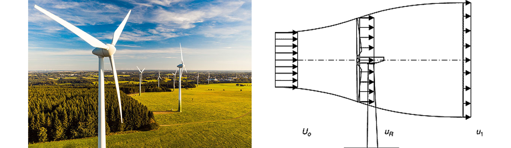

8. Turbomáquinas#
8.1. Introducción#
Definimos como bomba a cualquier máquina hidráulica que entrega energía a un fluido. Por otro lado, definimos como turbina a las máquinas que extraen energía de un fluido.

En el caso de interacción con líquidos:
La energía suministrada por bombas se manifiesta como un aumento de presión del fluido. La velocidad del fluido no aumenta, necesariamente.
La energía extraida por turbinas se manifiesta como una disminución de presión del fluido. La velocidad del fluido no aumenta, necesariamente.
{kind=link}
8.1.1. Máquinas hidráulicas para gases#
En el caso de gases, la clasificación del tipo de bomba depende de la función:
Ventilador diseñado para aumentar la velocidad (\(V_\mathrm{sale}\gg V_\mathrm{entra}\)), con un aumento mínimo en la presión (\(\Delta P\), bajo).
Compresor diseñado para aumentar la presión (\(\Delta P\), alto), con bajo aumento en la velocidad (\(V_\mathrm{sale}\sim V_\mathrm{entra}\)).
{kind=link}
En el caso de turbinas, la transferencia de energía generalmente se manifiesta en una disminución de la velocidad o presión dependiendo del tipo. Por ejemplo, en el caso de turbinas abiertas, la velocidad cambia y la presión se mantiene apróximadamente constante.
{kind=link}
En turbinas cerradas, los gases experimentan cambios en ambos, presión y velocidad.
8.1.2. Clasificación de máquinas hidráulicas#
Existen dos grandes tipos de máquinas hidráulicas
Máquinas de desplazamiento positivo El fluido se dirige hacia adentro de un volúmen cerrado deformable o con fronteras móviles, que permite la succión o impulsión del fluído.

Máquinas dinámicas En este caso, el volúmen no es cerrrado. Los álabes rotatorios suministran energía al fluido o la extraen de él.
Ejemplos de máquinas dinámicas son las bombas centrífugas y las turbinas hidráulicas.
En este curso nos enfocaremos en máquinas dinámicas. Específicamente, bombas centrífugas y turbinas eólicas